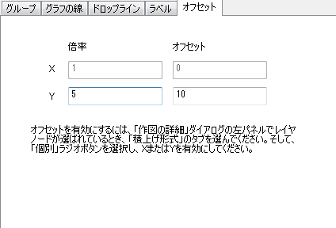

(作図の詳細) 「オフセット」タブ
PD-offset-tab
このタブは、積み上げ形式タブで個別が選択されているときに利用可能です。データプロットのX方向、および/または、Y方向の倍率 (縮尺倍率)とオフセット を定義する際に、使用します。

元データのプロット座標は、(X, Y)とします。積み上げグラフの(X', Y')座標は、次のように定義されます。
X' = Multiplier_X * X + Offset_X
Y' = Multiplier_Y * Y + Offset_Y
Note:
- このタブでオフセットを変更しなくても、データプロットをゆっくり2回クリックして選択し、マウスでつかんでドラッグすれば変更できます。詳細については、このチュートリアルを参照してください。
- 倍率オプションは、Y軸を線形からLog10に変更する場合など、軸スケールタイプを変更して、グラフウィンドウ内のプロット範囲の表示が大きく変わってしまう場合に、大変有効です。詳細については、このクイックヘルプを参照してください。
|